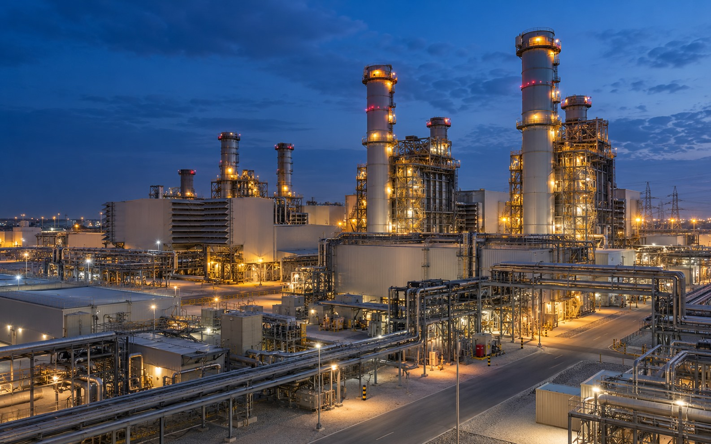
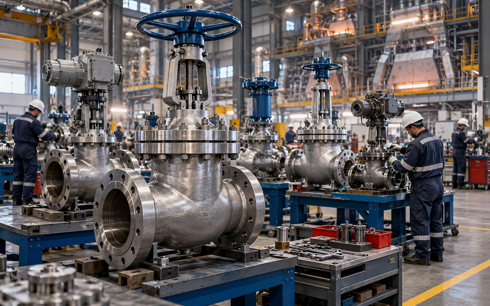
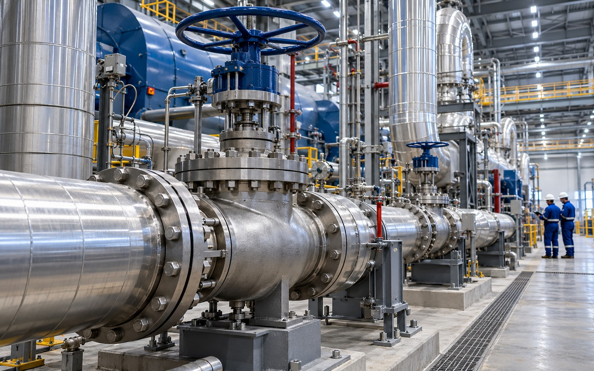
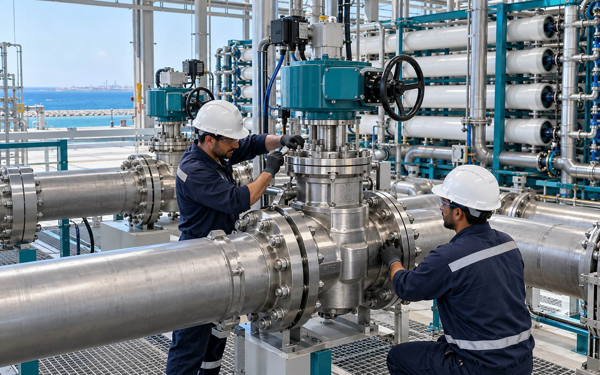
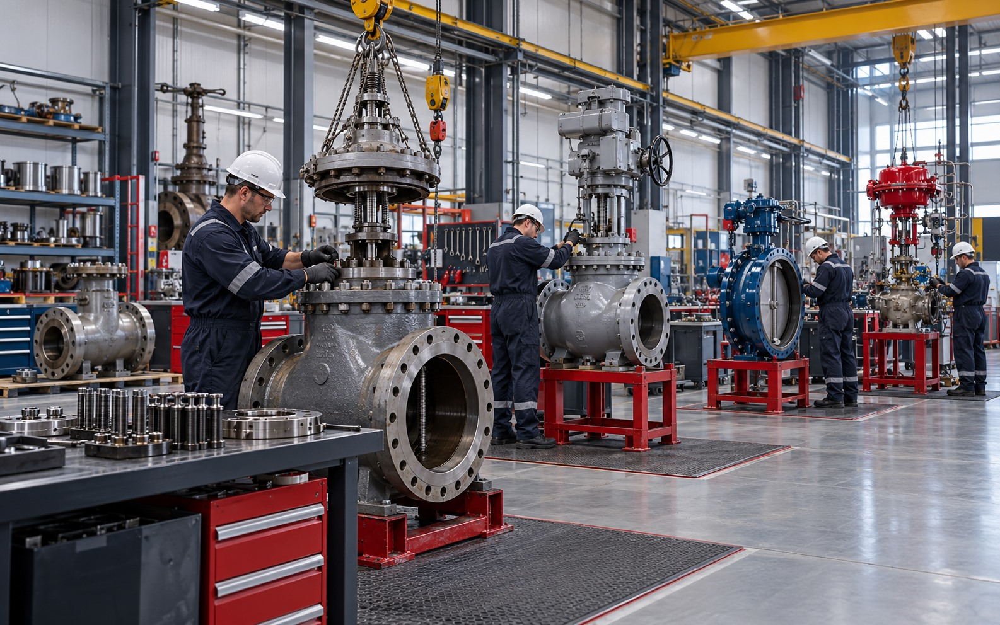
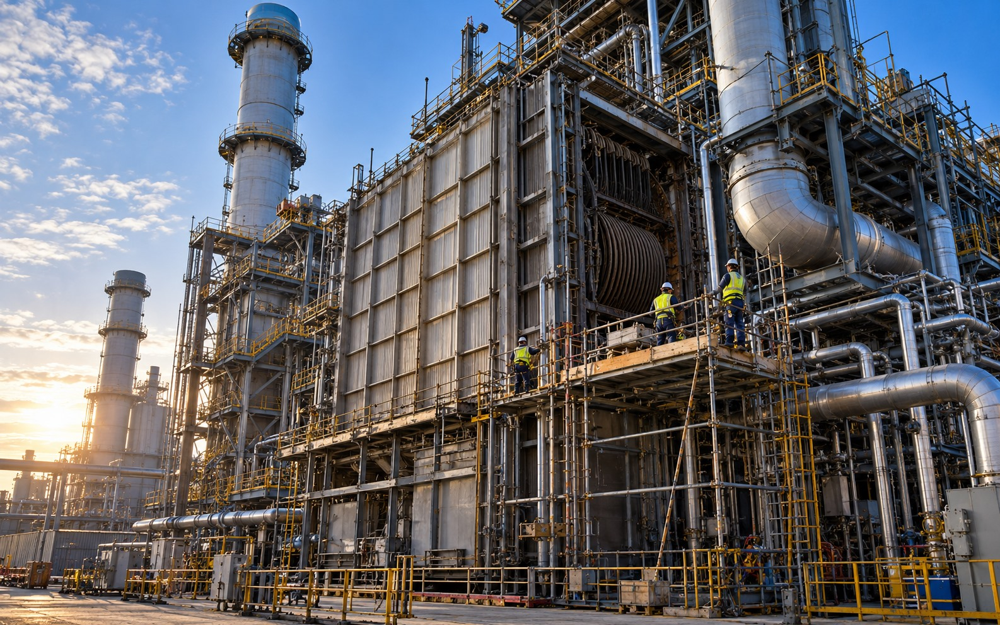
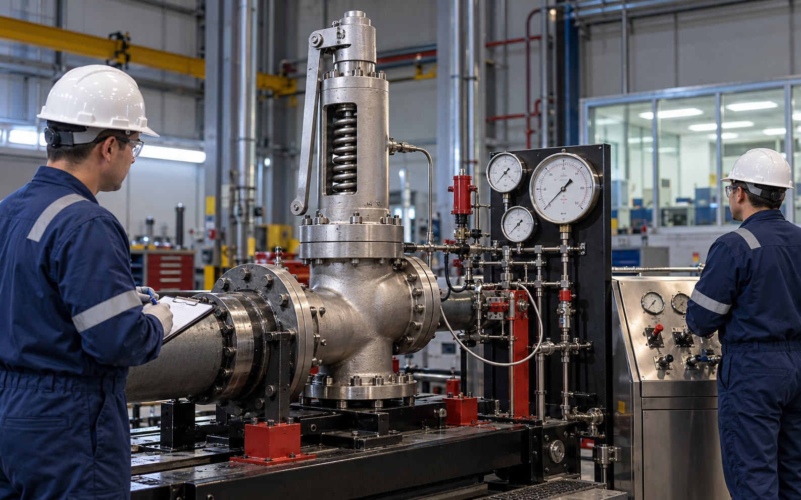
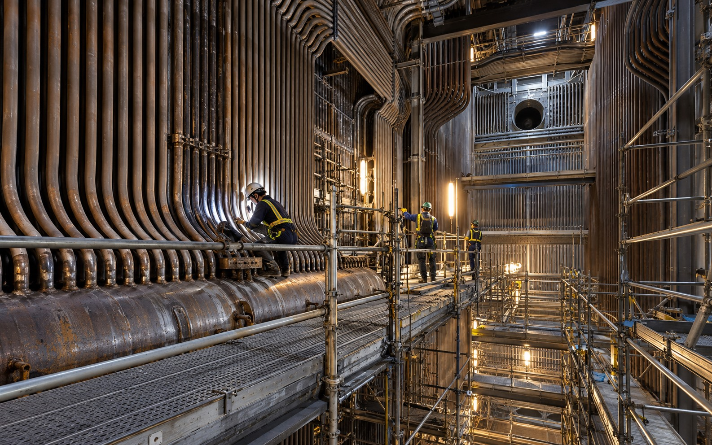
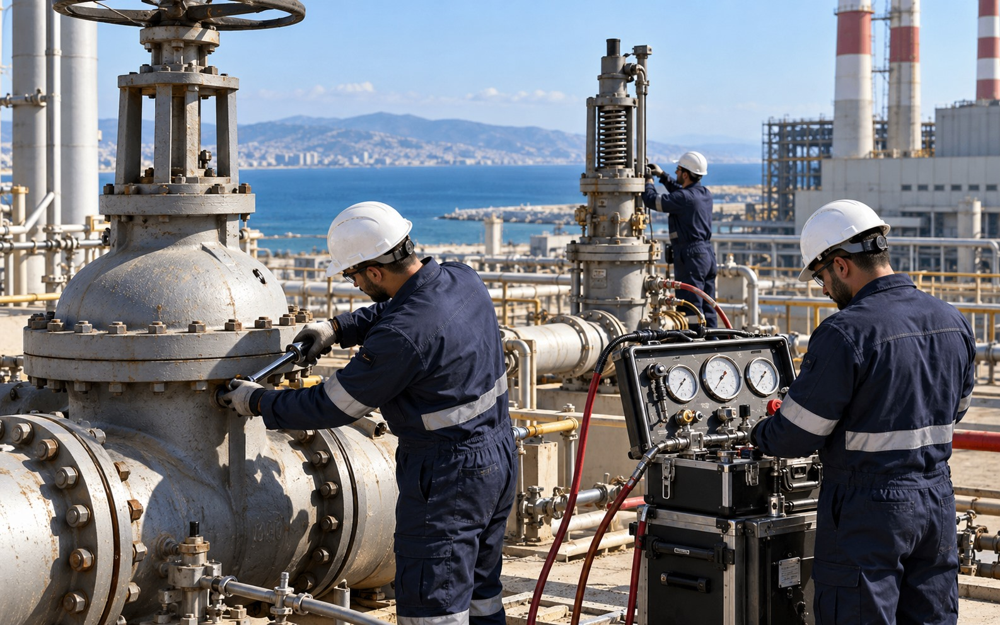

Hover over a project to view its original scope. On touch devices, tap a project image.

Project 01
Annual overhaul / maintenance of boilers, auxiliaries & fuel gas system in Plant 1 stations – Jebel Ali Power Station

Project 02
Overhaul of steam and misc valves in Power & Desal at Emirates Global Aluminium
Project 03
Fabrication of structural steel including support, ladder, and handrail – MAB Oilfield Engineering

Project 04
Valve and fitting replacement in steam, feed water, and make up water system at DEWA Jebel Ali

Project 05
Replacement of super duplex stainless steel plug valves at DEWA RO Plant

Project 06
Overhauling of different types of valves at 'K', 'L1', 'L2', 'M' & 'Mext' at Jebel Ali Power Station

Project 07
Annual overhaul maintenance of HRSGs and auxiliary boilers in Plant 2 at Jebel Ali Power Station

Project 08
Overhauling, EVT testing and live load testing of safety valves for HRSG and boilers at SEWA Layyah Power Station

Project 09
Annual overhaul / maintenance of boilers in ‘G’ Station Plant 1 at Jebel Ali Power Station

Project 10
Supply of valve specialists with equipment for refurbishment of shutoff valves and refurbishment, online testing & certification of safety valves at Deir Ammar & Zahrani Power Plant – Lebanon